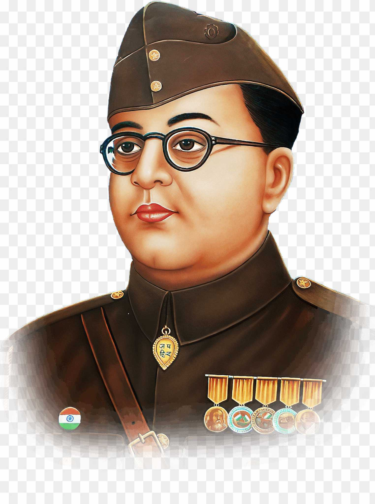

Netaji Subhas Chandra Bose

Birth Name:
Subhas Chandra BoseBorn:
January 23, 1897, Cuttack, Odisha, IndiaDied:
Reportedly August 18, 1945 (in a plane crash, controversy persists)Occupation:
Indian freedom fighter, nationalist leader, founder of Indian National Army (INA)Famous For:
Leading the Azad Hind Fauj (INA) against British rule; his slogan “Give me blood, and I shall give you freedom!”
Early Life and Education
Subhas Chandra Bose was born into a well-educated Bengali family. His father was a prominent lawyer. From an early age, Subhas was known for his sharp intellect and patriotic zeal. He studied at the Presidency College and later at the Scottish Church College in Kolkata. He went to England to prepare for the Indian Civil Services (ICS), which he passed with merit. However, he resigned from the ICS in 1921 to join the Indian freedom struggle under Mahatma Gandhi.
Freedom Struggle and Ideology
Bose was a revolutionary who believed that only armed struggle could achieve independence. Although initially associated with the Indian National Congress, he differed with Gandhi's non-violence approach. He became President of the Congress in 1938 and 1939 but later resigned due to ideological conflicts.
His vision was of a free and industrially strong India. He advocated for complete and immediate independence and did not shy away from seeking help from Axis powers during World War II.
Formation of Indian National Army (INA)
While in exile, Bose formed the Azad Hind Government and raised the Indian National Army (INA) with the support of Japan. He addressed INA soldiers with powerful words:
"Give me blood, and I shall give you freedom!"
The INA fought valiantly against the British in Northeast India. Although the military campaign didn’t succeed, Bose’s leadership inspired millions and instilled a sense of pride and nationalism among Indians.
Philosophy and Vision
Netaji’s core beliefs included:
- Complete and uncompromising independence for India
- A strong and united India, free from communalism
- Modern industrial and military development
- Equal rights for women
- Self-reliance and self-discipline among youth
He believed in sacrificing personal comfort for the sake of the motherland and inspired countless youth to do the same.
Legacy
- Revered as one of India’s greatest revolutionaries
- Inspired freedom fighters like Bhagat Singh and later generations
- INA trials sparked nationwide protests and shifted public opinion
- Numerous books, statues, and institutions are dedicated to his memory
- His birth anniversary is celebrated as **Parakram Diwas** (Day of Valor) on January 23
Mysterious Death
Netaji is said to have died in a plane crash in Taiwan on August 18, 1945. However, many believe he survived and lived in secrecy. The mystery of his death remains unresolved and continues to intrigue historians and citizens alike.
Quotes by Netaji Subhas Chandra Bose:
- “Give me blood, and I shall give you freedom!”
- “It is our duty to pay for our liberty with our own blood.”
- “One individual may die for an idea, but that idea will, after his death, incarnate itself in a thousand lives.”
- “Freedom is not given, it is taken.”